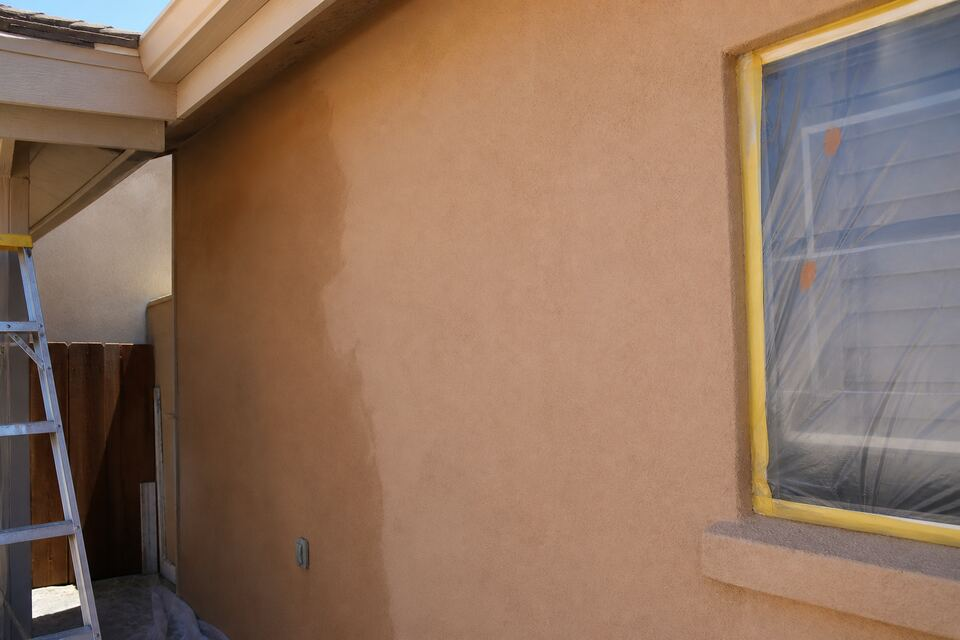

Re-Stucco & Color Coats in Santa Fe
Every stucco skin reaches the season when patching stops making sense — fade everywhere, patches showing, cracks arriving faster than repairs. A re-stucco or color coat resets the whole wall at once: one finish, one color, one cure, decades of service. This is also the moment Santa Fe homeowners finally fix the color they have tolerated for years.

Color coat vs full re-stucco
They solve different depths of tired. A color coat — a new finish layer over sound existing stucco — handles fade, surface crazing, patch-quilt walls, and color regret, at a fraction of full re-stucco cost. A full re-stucco strips back further and rebuilds coats, the right call when the brown coat is failing, cracking is systemic, or the substrate needs work. The look-at-it visit sounds the walls and tells you honestly which one your house needs — selling a re-stucco to a color-coat wall is the industry habit this page exists to oppose.
Cement color coat or elastomeric?
The two finishes argue across every Santa Fe fence. Cement-based color coats breathe, weather predictably, and patch invisibly later. Elastomeric coatings stretch over hairlines and resist driven rain — but they seal the wall, which is exactly wrong over adobe and over walls with unresolved moisture, where trapped water does slow damage behind a flexible skin. The honest answer is wall-by-wall: substrate, moisture history, and crack behavior decide it, and you get the reasoning, not just the recommendation.
The Santa Fe color conversation
Color here is civic. Earth tones are the city’s visual law in spirit and — inside the historic districts — sometimes in letter, where exterior color changes can require city approval before work. The visit flags whether your address needs it. Within the palette there is more room than people think: warm sands, deep adobes, rosy clays, cooler buffs — sampled on your actual wall in your actual light, because chips lie at 7,000 feet.
What the job looks like
Repairs first — a color coat over unrepaired cracks is paint over problems. Then masking, prep, and the finish applied wall by wall with wet edges kept and weather watched; stucco cures on its own schedule and good crews respect it. Most homes run a handful of days, monsoon afternoons and hard freezes excepted.
Tired walls, wrong color, or both?
Send the form with your area and what the walls look like. The visit sounds the stucco and shows the color-coat versus re-stucco math honestly.
Questions people ask
How long does a color coat last in Santa Fe sun?
Expect a couple of decades of honest service from a quality cement color coat, with south and west walls fading first — UV at this elevation plays favorites. Elastomerics age differently: color holds, but recoat cycles and breathability are the trade.
Can I change my stucco color dramatically?
Within the earth-tone family, yes — and inside historic districts, the city may need to approve exterior color changes first. The visit flags whether your address is in one before samples go up.
Do repairs happen before or with the re-stucco?
Before, always — cracks, soft spots, and parapet problems get fixed so the new finish goes over a sound wall. New finish over old failures is the expensive way to keep the failures.